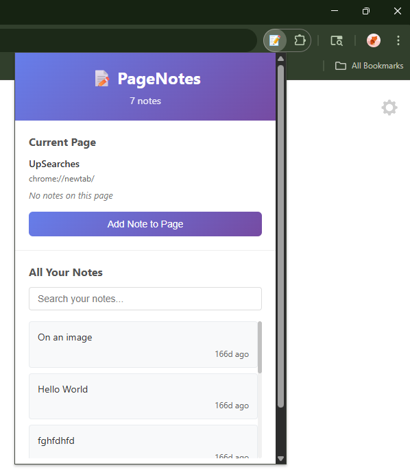
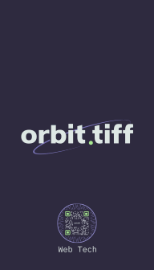

Launch Commander
A full-stack aerospace web app that gamifies rocket launches with prediction challenges, leaderboards, and live mission data. Built with the MEAN stack and integrating Launch Library 2.
View Project →Hi, I'm Tiffany — orbit.tiff is my brand. ↑ Click my photo to visit my About page.

Explore my recent projects across UX, accessibility, and aerospace interfaces.
A full-stack aerospace web app that gamifies rocket launches with prediction challenges, leaderboards, and live mission data. Built with the MEAN stack and integrating Launch Library 2.
View Project →
A refined WooCommerce experience crafted for collectors who appreciate the art and heritage of luxury timepieces. The site blends modern WordPress design with a warm, Texas‑inspired aesthetic, showcasing premium watches through elegant product layouts, smooth navigation, and a boutique‑style shopping flow. It highlights craftsmanship, authenticity, and elevated retail presentation—bringing a high‑end horology brand to life online.
View Project →
A full‑featured PHP jewelry website with a reusable template include system, server‑side form validation, and a MySQL‑backed contact form with honeypot spam protection, input sanitization, and time‑check guards. Features a Birthstone Sweepstakes module—a PHP dynamic participant table driven by a 2D array of birthstone data—and a demo mode so the site can run safely in a portfolio environment without live database writes.
View Project →Gym Therapy Experience is a Bootstrap‑built concept site that blends fitness, recovery, and real physical therapy into one accessible, energetic space. Designed around a playful, movement‑driven aesthetic, the site showcases a gym where members train alongside licensed therapists in a buddy‑system model that reduces injuries and builds confidence. Every session is followed by access to in‑house recovery stations—TENS units, saunas, hot/cold compress therapy, plunges, and professional‑level PT massages—creating an environment where getting fit and getting well finally meet without the high cost of traditional therapy.
View Project →Specialized pages, interactive tools, and art & design showcases built into this very portfolio.
An interactive AI toolkit constellation built inside this portfolio. Explore the AI tools I use daily—Copilot, Claude, ChatGPT, and more—through a live starfield skymap you can navigate with your mouse or keyboard. A transparent look at how I leverage AI to accelerate development without sacrificing craft.
Explore the Lab →
A curated gallery of brand identity work spanning diverse industries and visual styles. Each logo is purpose‑built to capture a brand's essence—balancing aesthetics, scalability, and market fit. From minimalist wordmarks to illustrative emblems, this collection demonstrates range and intentionality in visual communication.
View Gallery →

A one‑of‑a‑kind pixel‑specific browser annotation system I conceived, designed, and built with AI assistance. Notes stick to the exact coordinates on any webpage and stay anchored through scrolling, resizing, and dynamic content changes. Custom icons, persistent storage via the Chrome Extensions API, and a UX obsessively refined for low cognitive load.
Read the Case Study →
A social campaign that connected an audience to a clean skincare brand through authentic storytelling, email campaigns, and social content—resulting in increased engagement and product placement.
View Case Study →Resume & Downloads — credentials and contact, ready for your review.
Full mission brief — skills, experience, and objectives. One-click download, recruiter-ready.
⬇ Download ResumeHover or tap to flip ↩

Have a mission in mind? Let's collaborate on building accessible, mission-ready interfaces.
Currently available for freelance projects and full-time opportunities